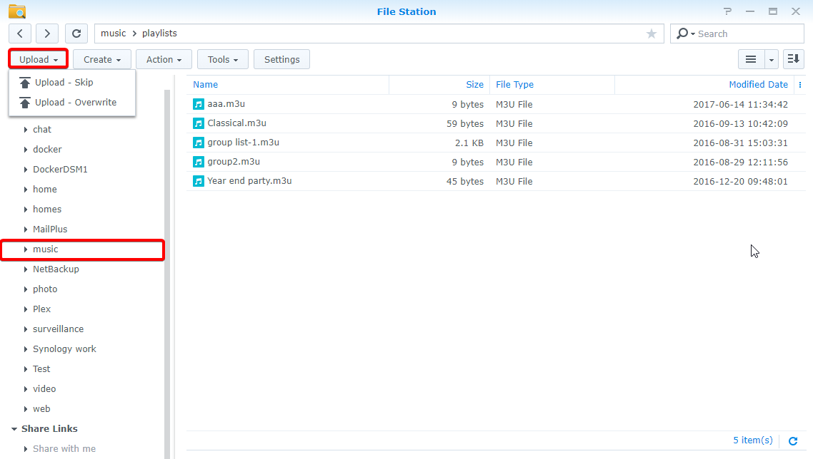
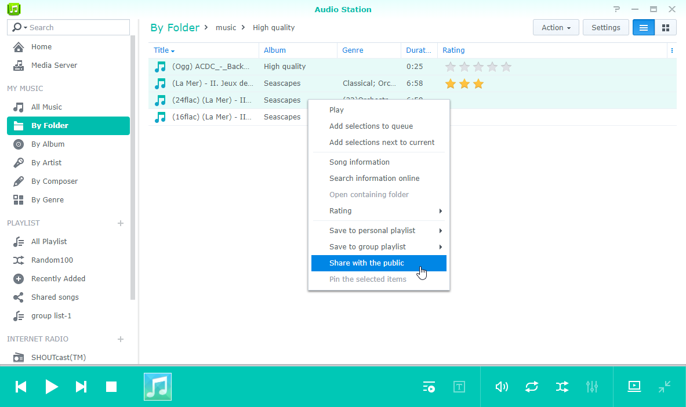

개요
Audio Station을 사용하면 인터넷을 통해 Synology NAS에 저장된 음악을 구성, 탐색 및 재생할 수 있습니다. 또한 Audio Station은 다양한 파일 형식을 지원하므로 원하는 형식의 음악을 감상할 수 있습니다. Audio Station을 구현하는 모바일 응용 프로그램인 DS audio를 다운로드하여 이동 중에도 Synology NAS의 음악에 액세스할 수 있습니다.
1. Audio Station 설치
- 패키지 센터로 이동하고 Audio Station을 찾습니다. 설치를 클릭합니다.

2. 음악 폴더에 오디오 파일 저장
- File Station > music으로 이동하고 업로드를 클릭합니다. 
- 로컬 컴퓨터에서 music 폴더에 업로드할 파일을 선택합니다.
3. 음악 찾아보기
음악 파일을 업로드한 후 Audio Station에서 음악을 재생하고 탐색할 수 있습니다. 로컬 네트워크에 연결되어 있지 않은 상태에서 음악 파일에 액세스하고 탐색할 수 있도록 하려면 제어판 > QuickConnect에서 QuickConnect를 활성화하는 것이 좋습니다. Synology 계정이 없는 경우 빠르게 계정을 설정한 후 DiskStation에 QuickConnect ID를 지정할 수 있습니다. 이 옵션이 활성화되어 있으면 DSM에 로그인하여 어디서나 음악에 액세스할 수 있습니다. 또한 QuickConnect ID를 사용하여 IP 주소를 기억할 필요 없이 DS audio에 로그인할 수 있습니다.
3.1 내 음악
왼쪽 패널에 있는 내 음악에는 Synology NAS의 music 공유 폴더 또는 다른 인덱싱된 폴더에 있는 음악이 있습니다. 내 음악 섹션에서 음악이 여러 가지 옵션을 제공하는 범주로 정렬되어 있어 폴더별, 앨범별 또는 아티스트별과 같은 기본 설정과 필요에 따라 음악을 간편하게 탐색할 수 있습니다. 또한 즐겨 찾는 음악 컬렉션을 홈에 고정하고 권장 장르에서 음악 장르로 분류된 곡을 확인할 수 있습니다. 검색할 각 범주를 클릭하거나 검색 창의 드롭다운 메뉴에서 원하는 범주를 선택하여 곡을 검색할 수 있습니다.

3.2. 보기 모드
Audio Station의 오른쪽 위 구석에 있는 아이콘을 사용하여 음악 라이브러리를 탐색할 수 있는 여러 가지 보기 모드로 전환할 수 있습니다.
- 목록 보기 - 음악을 목록으로 볼 수 있으며 곡 제목, 아티스트, 앨범, 곡 길이, 트랙 번호 및 평가가 표시됩니다.
- 아트워크 - 트랙 이름, 앨범 이름 및 앨범 아트워크가 표시됩니다.
- 재생 대기열 - 앨범 커버와 곡 제목 또는 가사와 함께 재생 대기열이 전체 화면으로 표시됩니다.


4. 공개 공유
Audio Station의 공개 공유 기능을 사용하면 네트워크에 연결되어 있지 않거나 Synology NAS가 없는 사람에게 전달할 수 있는 링크가 제공되어 곡을 공개적으로 공유할 수 있습니다. 이 링크가 있으면 곡을 감상할 수 있습니다.
4.1. 공개적으로 곡 공유
- 공유할 곡을 마우스 오른쪽 버튼으로 클릭하고 공개적으로 공유를 선택합니다. 
- 곡을 공개적으로 공유 시 다음과 같은 두 가지 옵션을 사용할 수 있습니다.
- 한 곡을 선택하여 공유하려면 표시되는 대화 상자에서 공개적으로 공유 옆에 있는 확인란을 확인 표시하여 공개 링크를 활성화합니다.
- 공유할 곡을 여러 곡 선택하면 재생 목록이 생성됩니다. 재생 목록에 이름을 지정할 수 있으며 유효 기간 사용자 지정 옆에 있는 확인란을 확인 표시하고 확인을 클릭하여 링크에 대한 유효 기간을 지정할 수 있습니다.


- 링크를 복사하여 재생 목록을 공유할 사람에게 붙여 넣거나 링크로 이동을 클릭하여 직접 링크를 방문합니다.
5. 모바일 장치에서 음악 구성 및 재생
DS audio는 iPad/iPhone/iPod touch 및 Android 장치에서 실행됩니다. 이 앱은 Apple App Store 또는 Google Play에서 무료로 제공됩니다. 아래 QR 코드를 스캔하여 즉시 다운로드할 수도 있습니다.